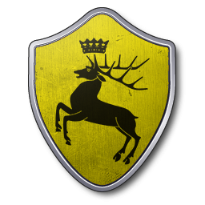
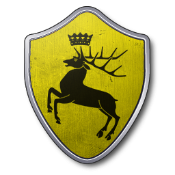

Le fondateur de la maisonnée, Lann le futé serait à l’origine de la prise de la forteresse de Castral Roc pour son propre compte. Il est admis que la richesse des Lannister est issue de l’exploitation des mines aurifères de l’Ouest. Les membres de la maisonnée sont réputés pour la richesse dont ils disposent mais également pour leur capacité à s’adapter aux turbulences du pouvoir afin de toujours se trouver au plus proche de la royauté.
L'histoire nous laisse par exemple, la cause commune du Roi Loren Lannister et du Roi Mern Jardinier du Bief qui ont décidé de s’allier afin de repousser l’envahisseur Targaryen, Aegon le conquérant. Après la victoire d’Aegon à la bataille du champ de feu, Loren Lannister pu s’enfuir et décida de s’incliner face au conquérant. C’est ainsi que les Lannister conservèrent le titre de suzerain de l’Ouest et devinrent Vassaux du Trône de fer.
L'image d’un Lannister correspond à une personne grande, blonde et avenante mais surtout rusée. Face à une telle notoriété, il n’est pas étonnant de retrouver l’emblème du Lion sur le blason de la maison. La fortune de la maison n’étant plus à faire, les demeures de la famille sont nombreuses mais en tant que lieux principaux, on retrouve Castral Roc et Port-Lannis. En effet, les Lannister ont régné en tant que rois du Roc et de Castral Roc pendant des siècles. La maison Lannister est par conséquent, la maison suzeraine de l’Ouest.
La dynastie des Rois du Roc débuta avec Lann le futé puis Lancel IV Lannister. S’ensuivirent, Lancel V, Tommen II et Loren Lanniser qui plia devant Aegon le conquerant. Au début de la série tv le Trône de Fer, les Lannister occupent une place prépondérante notamment avec Tywin et Joanna Lannister, les parents de Jamie, Cersei et Tyrion. Comme à leur habitude, les lannister sont très proches de la royauté.
 
